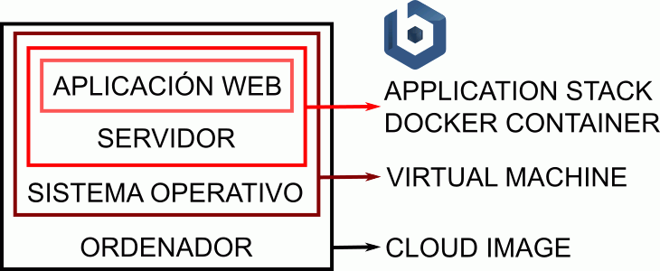

Bitnami nació en 2007 como proyecto de software libre dirigido a facilitar el despliegue y configuración de aplicaciones web, tanto en servidores propios como en Internet. Bitnami surgió de la empresa BitRock, fundada en 2003 por el ingeniero español Daniel López Ridruejo.
La lista de aplicaciones web que ofrece Bitnami se puede ver en https://bitnami.com/stacks. Actualmente (enero de 2017) ofrecen más de 150 aplicaciones distintas.
Bitnami ofrece una información muy completa sobre la instalación y administración de las aplicaciones en la web de documentación de Bitnami
El sistema operativo normalmente proporcionado por Bitnami es actualmente (enero de 2017) Ubuntu LTS 14.04.
Tipos de instaladores
Bitnami ofrece muchos tipos de instaladores.
Por un lado, podemos distinguir los instaladores de acuerdo con el sistema de base utilizado:
instaladores para servidores físicos o máquinas virtuales
instaladores para servidores en la nube (AWS, Google Cloud, MS Azure, etc.)
instaladores para contenedores (Docker)
Por otro lado, podemos distinguir los instaladores de acuerdo con las capas de software incluidas:
un módulo es un instalador que sólo incluye la aplicación
un stack (pila) es un instalador que incluye la aplicación y los servidores que necesita la aplicación
un stack de infraestructura es un instalador que incluye varios servidores que suelen utilizarse conjuntamente.
Algunos de los instaladores están pensados para el caso en que sólo queremos tener una aplicación en el ordenador y otros están pensados para el caso en que queremos tener varias aplicaciones simultáneamente (aunque se pueden mezclar ambos tipos de instaladores, es mejor no hacerlo porque pueden aparecer algunos problemas).
Instalar una única aplicación

Si queremos instalar una única aplicación web, Bitnami ofrece varios tipos de instaladores "llave en mano":
Cloud:
El instalador de Bitnami prepara un ordenador virtual, instala el sistema operativo Ubuntu, instala los servidores necesitados por la aplicación (servidor web, base de datos, lenguajes, etc.) y la propia aplicación.
El ordenador virtual se puede crear en varias de las plataformas comerciales (Amazon web services, Google Cloud Plataform, Microsoft Azure, etc.).
Los acuerdos de Bitnami con las diferentes plataformas permiten hacer pruebas gratuitas.
La máquina virtual de Bitnami incluye el sistema operativo Ubuntu, los servidores necesitados por la aplicación (servidor web, base de datos, lenguajes de programación, etc.) y la propia aplicación.
Las imágenes suelen estar preparadas en el formato OVA y se pueden ejecutar en VirtualBox (software libre) o con la versión gratuita de VMware player).
Los instaladores de aplicaciones de Bitnami incluyen los servidores necesitados por la aplicación (servidor web, base de datos, lenguajes de programación, etc.) y la propia aplicación.
Los instaladores están disponibles para Windows, Linux y OSX, en muchos casos para 32 o 64 bits y en algunos casos para varias versiones de la aplicación (estables o en desarrollo).
Podemos instalar varias aplicaciones en un mismo ordenador mediante estos instaladores, pero se ocupa espacio innecesario y los servidores pueden interferirse entre sí.
Los contenedores Docker de aplicaciones de Bitnami incluyen únicamente la aplicación, aunque están disponibles contenedores de aplicaciones de infraestructura (lenguajes de programación, bases de datos, servidores web, etc.).
Actualmente (enero de 2017) el número de aplicaciones ofrecidas como contenedor es bastante menor que en los otros formatos (unas 50 aplicaciones frente a unas 150 aplicaciones).
Los contenedores están creados por una herramienta de Bitnami llamada Stacksmith que Bitnami ofrece para crear contenedores personalizados.
Si queremos instalar varias aplicaciones web que pueden necesitar diferentes servidores, Bitanmi ofrece varios tipos de instaladores "llave en mano":
Infrastructure Virtual Machine (VM):
Las máquinas virtuales de infraestructura de Bitnami incluyen el sistema operativo Ubuntu y los servidores que suelen necesitarse de forma conjunta (por ejemplo, Apache y MySQL, o Apache y PostgreSQL, o Nginx y MySQL, etc.).
Los instaladores de infraestructura de Bitanmi instalan los servidores que suelen necesitarse de forma conjunta (por ejemplo, Apache y MySQL, o Apache y PostgreSQL, o Nginx y MySQL, etc.).
Los instaladores de infraestructura están disponibles para Windows, Linux y OSX.
Es posible instalar varios instaladores de infraestructura en el mismo sistema operativo.
Los módulos de Bitanami incluyen únicamente la aplicación, por lo que se necesita tener instalado previamente los servidores necesarios (a través de instaladores de infraestructura).
Los módulos están disponibles para Windows, Linux y OSX, en muchos casos para 32 o 64 bits y en algunos casos para varias versiones de la aplicación (estables o en desarrollo).
{kind=link}
{kind=link}
{kind=link}
{kind=link}
{kind=link}
{kind=link}
{kind=link}
{kind=link}
{kind=link}
{kind=link}
{kind=link}
{kind=link}
{kind=link}
{kind=link}
{kind=link}